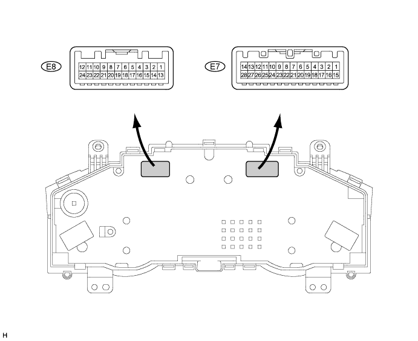
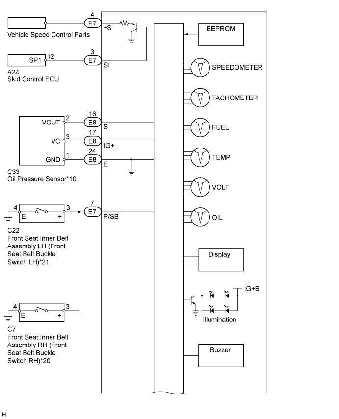
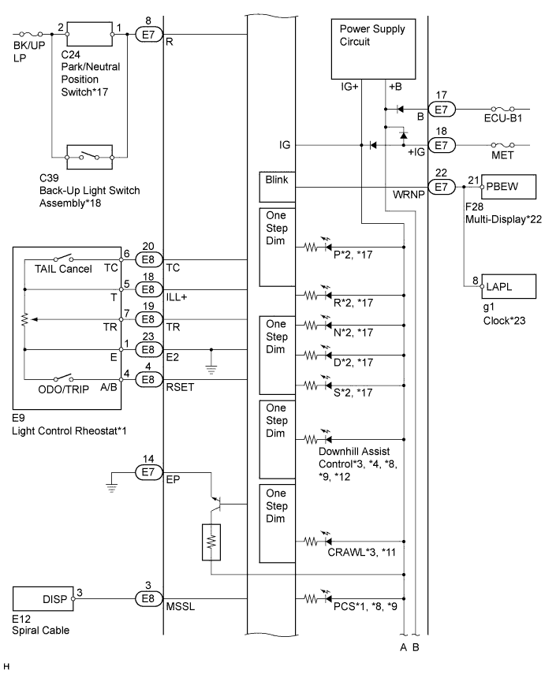
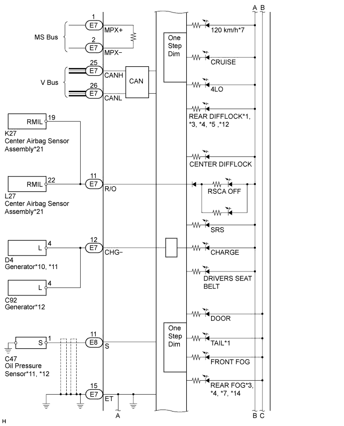
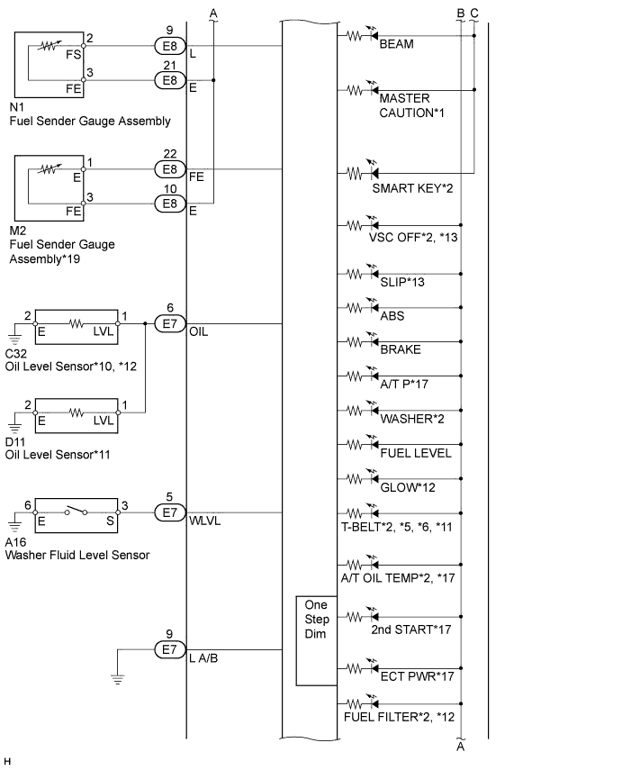
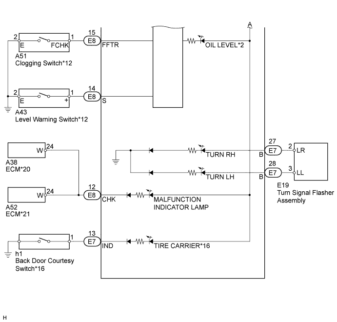

METER / GAUGE SYSTEM > TERMINALS OF ECU |
| CHECK COMBINATION METER |

Measure the resistance and voltage according to the value(s) in the table below.
| Terminal No. (Symbol) | Wiring Color | Terminal Description | Condition | Specified Condition |
| E7-3 (SI) - Body ground | V - Body ground | Speed signal (input) | Engine switch on (IG), wheel turned slowly | Pulse generation |
| E7-4 (+S) - Body ground | V - Body ground | Speed signal (output) | Engine switch on (IG), wheel turned slowly | Pulse generation |
| E7-5 (WLVL) - Body ground | V - Body ground | Washer level warning signal | Washer fluid level sensor ON | Below 1 V |
| Washer fluid level sensor OFF | 11 to 14 V | |||
| E7-6 (OIL) - Body ground | L - Body ground | Oil level signal | Oil level sensor ON | Below 1 V |
| Oil level sensor OFF | 11 to 14 V | |||
| E7-7 (P/SB) - Body ground |
| Seat belt warning signal | Engine switch on (IG), seat occupied, seat belt unfastened → fastened | Alternating between below 1 and 11 to 14 V |
| E7-8 (R) - Body ground | L - Body ground | Park/neutral signal*3 Reverse signal*4 | Park/neutral switch on*3 Back-up light switch on*4 | 11 to 14 V |
| E7-9 (L A/B) - Body ground | GR - Body ground | Ground | Always | Below 1 V |
| E7-11 (R/O) - Body ground*5 | P - Body ground | RSCA OFF indicator light input signal | Engine switch on (IG), RSCA OFF indicator light on | Below 1 V |
| Engine switch on (IG), RSCA OFF indicator light off | 8 to 14 V | |||
| E7-12 (CHG-) - Body ground | B - Body ground | CHARGE warning light | Engine switch on (IG), CHARGE warning light on | Below 1 V |
| Engine switch on (IG), CHARGE warning light off | 11 to 14 V | |||
| E7-13 (IND) - Body ground*6 | R - Body ground | TIRE CARRIER warning light | Back door open | Below 1 V |
| Back door closed | 11 to 14 V | |||
| E7-14 (EP) - Body ground | W - B | Ground | Always | Below 1 V |
| E7-15 (ET) - Body ground | BR - Body ground | Ground | Always | Below 1 V |
| E7-17 (B) - Body ground | R - Body ground | Power source | Always | 11 to 14 V |
| E7-18 (IG+) - Body ground | B - Body ground | Engine switch signal | Engine switch off | Below 1 V |
| Engine switch on (IG) | 11 to 14 V | |||
| E7-22 (WRNP) - Body ground | Y - Body ground | Passenger seat belt warning light signal | Engine switch on (IG), passenger seat occupied, seat belt unfastened → fastened | Alternating between below 1 and 11 to 14 V |
| E7-27 (B) - Body ground | R - Body ground | Turn signal R | Engine switch on (IG), turn signal switch neutral position | Below 1 V |
| Engine switch on (IG), turn signal switch turned to left | Alternating between below 1 and 11 to 14 V | |||
| E7-28 (B) - Body ground | L - Body ground | Turn signal L | Engine switch on (IG), turn signal switch neutral position | Below 1 V |
| Engine switch on (IG), turn signal switch turned to right | Alternating between below 1 and 11 to 14 V | |||
| E8-3 (MSSL) - Body ground | L - Body ground | Spiral cable signal | Engine switch on (IG), steering pad switch signal DISP OFF | Below 1 V |
| Engine switch on (IG), steering pad switch signal DISP ON | 11 to 14 V | |||
| E8-4 (RSET) - Body ground*7 | B - Body ground | Light control rheostat signal | Engine switch on (IG), light control rheostat trip switch off | Below 1 V |
| Engine switch on (IG), light control rheostat trip switch on | 11 to 14 V | |||
| E8-9 (L) - Body ground | Y - Body ground | Fuel sender gauge signal | Fuel F (full tank) → E (empty) | 4.5 to 9 V |
| E8-10 (L) - Body ground*8 | BR - Body ground | Fuel sender gauge signal | Fuel F (full tank) → E (empty) | 4.5 to 9 V |
| E8-11 (S) - Body ground*9, *10 | L - Body ground | Engine oil pressure warning signal | Engine oil pressure warning light illuminated → not illuminated | Alternating between below 1 and 11 to 14 V |
| E8-12 (CHK) - Body ground | R - Body ground | MIL input signal | Engine switch on (IG), MIL on | Below 3 V |
| Engine switch on (IG), MIL off | 11 to 14 V | |||
| E8-14 (S) - Body ground*10 | G - Body ground | Fuel filter warning signal | Engine switch on (IG), clogging switch on | Alternating between below 1 and 11 to 14 V |
| E8-15 (FFTR) - Body ground*10 | V - Body ground | Fuel filter warning signal | Engine switch on (IG), level warning switch on | Alternating between below 1 and 11 to 14 V |
| E8-16 (S) - Body ground*11 | LG - Body ground | Engine oil pressure warning signal | Engine oil pressure warning light illuminated → not illuminated | Alternating between below 1 and 11 to 14 V |
| E8-17 (IG+) - Body ground*11 | B - Body ground | Engine oil pressure warning signal | Engine oil pressure warning light illuminated → not illuminated | Alternating between below 1 and 11 to 14 V |
| E8-18 (ILL+) - Body ground*7 | G - Body ground | Light control rheostat signal | Engine switch on (IG) | 4.6 to 5.4 V |
| E8-19 (TR) - Body ground*7 | W - Body ground | Light control rheostat knob input | Light control rheostat knob fully turned left | Below 1 V |
| Light control rheostat knob fully turned right | 10 kΩ or higher | |||
| E8-20 (TC) - Body ground*7 | B - Body ground | Light control rheostat signal | Engine switch on (IG), light control rheostat TAIL, cancel switch off | Below 1 V |
| Engine switch on (IG), light control rheostat TAIL, cancel switch on | 10 kΩ or higher | |||
| E8-21 (E) - Body ground | B - Body ground | Fuel sender gauge ground | Always | Below 1 Ω |
| E8-22 (FE) - Body ground*8 | G - Body ground | Fuel sender gauge ground | Always | Below 1 Ω |
| E8-23 (E2) - Body ground*7 | L - Body ground | Light control rheostat ground | Always | Below 1 V |
| E8-24 (E) - Body ground*11 | W - Body ground | Oil pressure sensor ground | Always | Below 1 Ω |
| CHECK COMBINATION METER INNER CIRCUIT |




